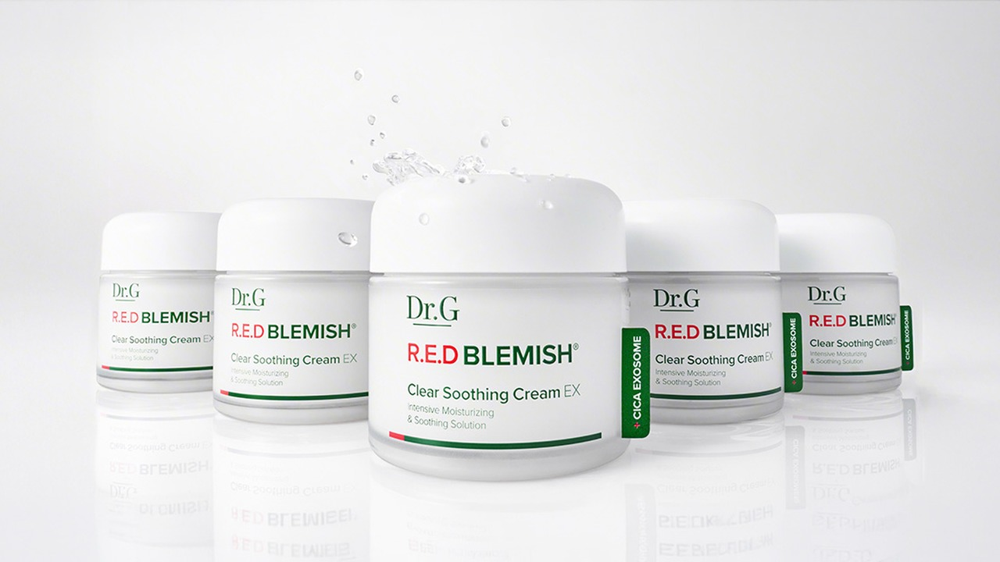
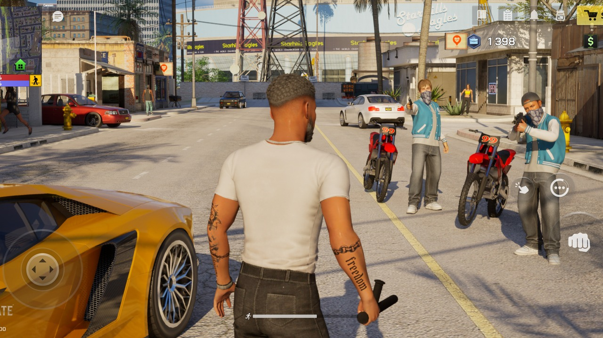
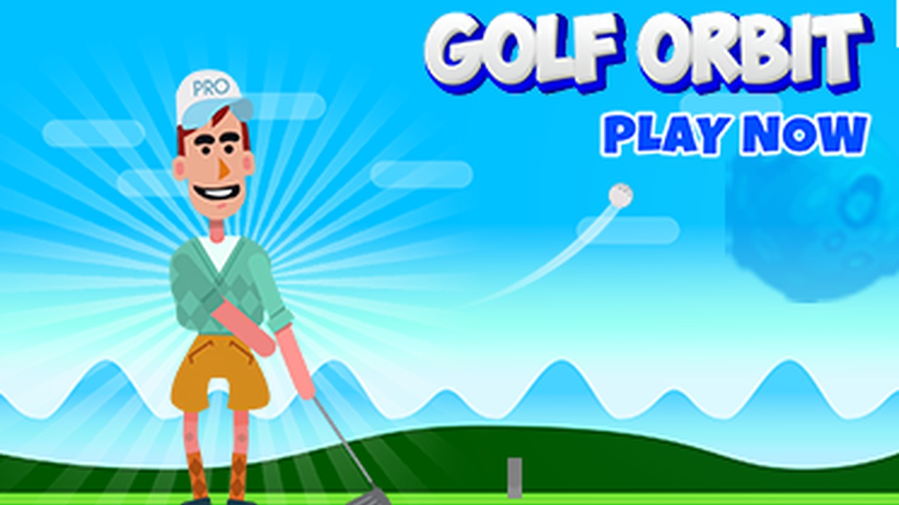
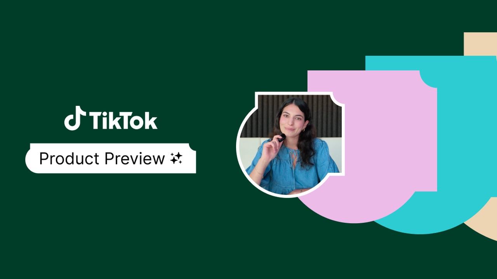
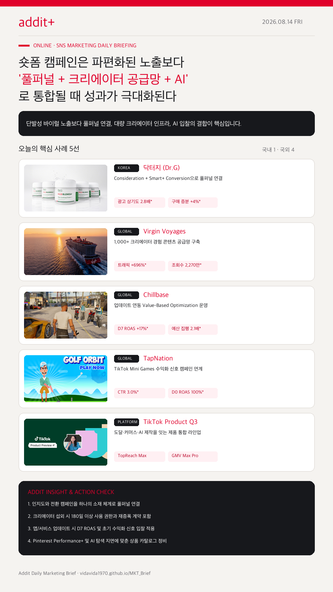

01
숏폼 광고는 인지도와 전환을 풀퍼널로 연결한다
닥터지(광고 상기도 2.8배, 구매 증분 +4%)처럼 Consideration Ads와 Smart+ Conversion을 한 소재 체계로 연결해야 성과가 납니다.
Consideration+Smart+ 풀퍼널, 1,000+ 크리에이터 경험 시스템화, D7 ROAS 최적화, AI 자동 입찰 구조가 하나의 시스템으로 작동합니다.
닥터지(광고 상기도 2.8배, 구매 증분 +4%)처럼 Consideration Ads와 Smart+ Conversion을 한 소재 체계로 연결해야 성과가 납니다.
Virgin Voyages처럼 1,103명의 크리에이터 온보딩, 180일 사용 권한 확보, 우수 소재 재증폭으로 트래픽 696% 증가를 만들었습니다.
Chillbase 사례처럼 대규모 업데이트에 맞춰 D7 ROAS 목표 입찰을 붙여 LATAM 시장 ROAS 17% 개선을 달성했습니다.
TapNation 사례처럼 Mini Games 내 보상형 광고 시청·D0 ROAS 신호를 입찰 조건으로 사용해 D0 ROAS 100% 달성을 기록했습니다.
TikTok Q3 제품 업데이트와 Pinterest Performance+는 캠페인 입력값을 자동화하고 상품 카탈로그/AI 소재 최적화를 전면 적용합니다.

KOREA레드 블레미쉬 리뉴얼 메시지를 브랜딩과 전환 캠페인에 동시 활용해 광고 상기도 시장 평균 대비 2.8배, 구매 증분 +4%, 검색량 +5.3%를 달성했습니다.
크리에이터 1,103명 선상 경험 기록, 180일 사용 권한 확보, 우수 소재 유료 증폭으로 웹사이트 트래픽 +696%, 영상 조회수 2,270만 회를 기록했습니다.

GLOBALOne State RP 대규모 업데이트 시점에 맞춘 D7 Highest Value Bidding으로 TikTok 내 예산 집행 2.1배, LATAM 시장 D7 ROAS +17%를 달성했습니다.

GLOBAL보상형 광고 시청 및 D0 tROAS 온사이트 신호 입찰로 클릭률 3%, 활성 유저 75% 광고 시청, 목표 D0 ROAS 입찰 100% 달성을 기록했습니다.

PLATFORMTopReach Max Reach, GMV Max Pro, Seller Scale Up, Symphony AI 영상 자동 생성으로 브랜드 인지도부터 커머스 매출까지 연결합니다.
자동 입찰, 자동 타깃팅, 생성형 배경 최적화로 캠페인 세팅을 간소화하고 전면 최적화를 제공합니다.
Pinterest 도움말 →AI 이미지 검색과 스크린샷 쇼핑 확산에 대응하는 상세 페이지 및 크리에이터 비주얼 최적화 방향을 다룹니다.
Criteo 보도자료 →
숏폼 마케팅은 개별 영상의 조회수 경쟁에서 벗어나고 있습니다. 인지도-전환 풀퍼널, 크리에이터 섭외-재증폭 계약, AI 입찰 신호가 맞물려야 안정적인 마케팅 성과를 만들어낼 수 있습니다.
{kind=link}